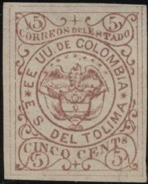
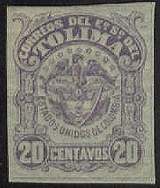
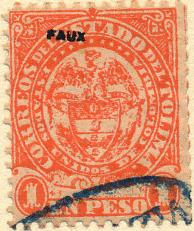
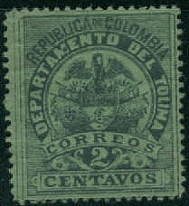
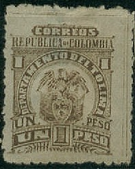
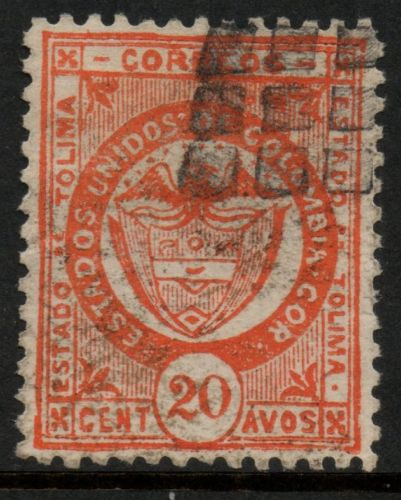

Return To Catalogue - Colombia
Note: on my website many of the
pictures can not be seen! They are of course present in the
catalogue;
contact me if you want to purchase it.
Reduced size
5 c black 10 c black
There are 20 types of the 5 c and 4 types of the 10 c. The 5 c exists on white, yellow and grey paper. The 10 c on white or blue paper.
Value of the stamps |
|||
vc = very common c = common * = not so common ** = uncommon |
*** = very uncommon R = rare RR = very rare RRR = extremely rare |
||
| Value | Unused | Used | Remarks |
| 5 c | R | R | |
| 10 c | R | R | |
I've been told that the next stamps are 'official imitations':

And a 'reprint' of the two 5 c values, reduced size
Oswald Schroeder forgery of the 5 c
value.

I've been told that this is a Raoul de Thuin forgery.


5 c brown 10 c blue 50 c green 1 P red on red 5 P yellow (bogus issue?) 5 P red (bogus issue?) 5 P brown (bogus issue?)
If anybody possesses a picture of a 5 P stamp (similar in design to the 5 c), please contact me!
Value of the stamps |
|||
vc = very common c = common * = not so common ** = uncommon |
*** = very uncommon R = rare RR = very rare RRR = extremely rare |
||
| Value | Unused | Used | Remarks |
| 5 c | * | * | Reprint: * |
| 10 c | *** | *** | Reprint: * |
| 50 c | *** | *** | Reprint: ** |
| 1 P | *** | *** | Reprint: * |
| 5 P yellow | ? | ? | |
| 5 P red | ? | ? | |
| 5 P brown | ? | ? | |
Reprints exist of the 10 c, 50 c and 1 P values (made in 1881) on bluish paper instead of white paper (information obtained from 'An illustrated catalog of all known reprints of officially issued postage stamps and postal stationery, 1840 to 1892' by Kalckhoff, Hilckes and Evans). Traces of the defacing lines can be seen in the design of these reprints. Other sources say that the 5 c was also reprinted. The reprinted 5 c have two '*', the originals have two circles. The lettering is also different for this 'reprint'; see for example 'CINCO CENTS'.

'Reprint' of the 5 c. Also a possible reprint of the 10 c.
Even Sperati made forgeries of the bogus 5 P design:
Sperati forgery of the 5 P red stamp.
5 c brown 5 c orange (1883) 10 c blue 10 c red (1883) 50 c green 1 P red
Value of the stamps |
|||
vc = very common c = common * = not so common ** = uncommon |
*** = very uncommon R = rare RR = very rare RRR = extremely rare |
||
| Value | Unused | Used | Remarks |
| 5 c brown | * | * | |
| 5 c orange | * | * | |
| 10 c blue | * | * | |
| 10 c red | * | * | |
| 50 c | * | * | |
| 1 P | ** | ** | |
Forgery, example:

(5 c green, wrong colour!)

20 c violet
Value of the stamps |
|||
vc = very common c = common * = not so common ** = uncommon |
*** = very uncommon R = rare RR = very rare RRR = extremely rare |
||
| Value | Unused | Used | Remarks |
| 20 c | * | * | |

1 c grey 2 c red 2 1/2 cbrown 5 c brown 10 c blue 20 c yellow 25 c black 50 c green 1 P red 2 P lilac 5 P yellow 10 P red
Value of the stamps |
|||
vc = very common c = common * = not so common ** = uncommon |
*** = very uncommon R = rare RR = very rare RRR = extremely rare |
||
| Value | Unused | Used | Remarks |
| 1 c | c | c | |
| 2 c | c | c | Misprint 2 c blue: R |
| 2 1/2 c | c | c | |
| 5 c | * | * | |
| 10 c | * | * | |
| 20 c | ** | ** | |
| 25 c | ** | ** | |
| 50 c | * | * | |
| 1 P | * | ** | |
| 2 P | ** | ** | |
| 5 P | ** | ** | Misprint 5 P red: R |
| 10 P | *** | *** | |
(reduced sizes)


1 c lilac 2 c lilac 2 1/2 c red 5 c brown 10 c blue 20 c yellow 25 c black 50 c green 1 P red 2 P violet 5 P yellow 10 P red
Two types exist, with bottom part of arms touching the circle below and not touching it.
Value of the stamps |
|||
vc = very common c = common * = not so common ** = uncommon |
*** = very uncommon R = rare RR = very rare RRR = extremely rare |
||
| Value | Unused | Used | Remarks |
| 1 c | R | R | |
| 2 c | R | R | |
| 2 1/2 c | RR | RR | |
| 5 c | ** | ** | Two types |
| 10 c | R | R | Two types |
| 20 c | R | R | |
| 25 c | R | R | |
| 50 c | *** | *** | Two types |
| 1 P | *** | *** | Two types |
| 2 P | R | R | |
| 5 P | RR | R | |
| 10 P | R | R | Imperforate: RRR |


1 c blue on red (1895) 2 c green on green (1895) 5 c red 10 c green 20 c blue on yellow (1895) 50 c blue 1 P brown
Usually these stamps are perforated, but imperforate stamp also exist.
Value of the stamps |
|||
vc = very common c = common * = not so common ** = uncommon |
*** = very uncommon R = rare RR = very rare RRR = extremely rare |
||
| Value | Unused | Used | Remarks |
| 1 c | * | * | |
| 2 c | * | * | |
| 5 c | c | c | |
| 10 c | * | * | |
| 20 c | ** | ** | |
| 50 c | *** | *** | |
| 1 P | *** | *** | |
| 1 P | R | R | With overprint 'Correos Departa- mentales' in three lines |
The value 1 P exists with overprint 'Correos Departa- mentales' in three lines surrounded by a rectangle (issued 1909):

4 c black on green 10 c blue 20 c orange 50 c black on red 50 c black on grey 1 P brown 2 P grey 5 P red 10 P black on green 10 P black on bluish grey
These stamps exist perforated 12, but also imperforate.
Value of the stamps |
|||
vc = very common c = common * = not so common ** = uncommon |
*** = very uncommon R = rare RR = very rare RRR = extremely rare |
||
| Value | Unused | Used | Remarks |
| 4 c | c | c | |
| 10 c | c | c | |
| 20 c | * | * | |
| 50 c black on red | * | * | |
| 50 c black on grey | ** | ** | |
| 1 P | * | * | |
| 2 P | * | * | |
| 5 P | * | * | |
| 10 P black on green | ** | ** | |
| 10 P black on bluish grey | ** | ** | |
Probably genuine
Senf made forgeries of some postal stationery of Tolima (inscription 'CERTIFICACION CON CONTENIDO':

(Senf forgery)
At the bottom the inscription 'KUNST BEILAGE ZU SENF'S "ILLUSTRIRTEM BRIEFMARKEN-JOURNAL" No13. 1888'. Senf also made a forgery of the three-coloured 10 cents and 50 cents value postal stationery of Tolima (the forgeries have inscription 'FACSIMILE' twice in the 'Remite' section at the bottom.
Possibly some other Senf forgeries of registration labels which were issued in 1879 (10 c and 50 c):
An advertisement for these 'Facsimiles' from Senf, where a set of
10 facsimiles are offered for a price of 2 Mark. It includes the
25 c and 50 c 1865 issue, the 50 c 1867 issue, the 50 c 1870
issue for Colombia. Also the 5 c, 10 c
and 50 c of the 1879 issue and the 5 c, 10 c, and 50 c of the
1886 issues of Tolima were included.
More registration labels were issued between 1883 slightly different from the above design (5 c, 10 c and 50 c). In 1886 another set followed in different colours (5 c, 10 c and 50 c).
Between 1888 and 1896 a new set was issued in the design as shown below. They exist with inscription '18', '188' or '189' (where the year is supposed to be entered):
Registration label of 1888, with inscription '188'.
With inscription '18' or '188' were issued: 5 c, 10 c and 50 c. With inscription '189' were issued the values 20 c, 30 c, 40 c, 50 c, 60 c, 70 c, 80 c, 90 c and 1 P.
Unlisted stamps:
(Cut from a postal stationery?)


Some other unlisted stamps, bogus issues or cuts from postal
stationary?
A 5 P in the design of the 5 c 1871 issue is a bogus stamp (the design is in negative with respect to the 5 c).
Some stamps with an 'A' in a star are also bogus, 5 different colours seem to exist.
Sellos - Stamps - Timbres-Poste - Briefmarken
{kind=link}
{kind=link}
{kind=link}
{kind=link}